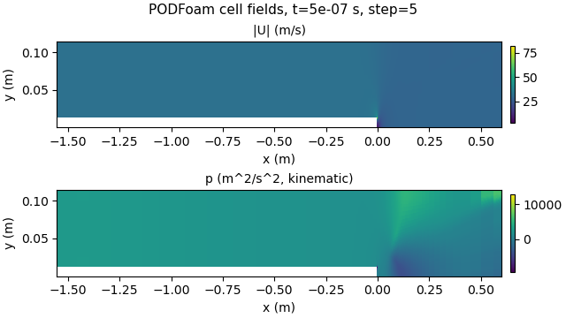

PythonFOAM + Gemma 4 E2B
Reading OpenFOAM solver state with a local vision-language model during a PODFoam run. Tested code 23089bb, run pod-llm-demo.LRfJBN, 2026-10-17.

| Condition | Result | Files equal to baseline | Callback time |
|---|---|---|---|
| No model request | baseline | - | 0.493 s |
| Numbers + image | answer stored | 45 / 45 | 78.256 s |
| Numbers only | answer stored | 45 / 45 | 39.672 s |
| Connection refused | error stored, run continues | 45 / 45 | 0.509 s |
| Delayed response (4 s deadline) | timeout stored, run continues | 45 / 45 | 4.013 s |
On one saved state, all six paired answers (numbers only / numbers + image) gave a wrong maximum-speed location: 60.92 cm and 50.97 cm from the true cell.
October 19 (code 934da23, Slurm job 24696203): the same six paired requests sent to Gemma 4 12B QAT on one NVIDIA A30. Each answer took 2.0 to 3.3 s (E2B on the CPU: 13 to 56 s). All six said the location is unknown, so there is no position error to compare. Details.
October 20 (code 9449085, run pod-llm-async.pp7agC): requests can run asynchronously (the solver kept stepping; replies recorded 843 and 1071 steps after the request, written fields unchanged). Asked where the fastest flow is in one snapshot, the model was never within 10 % of the plotted range; asked how three snapshots change, it called the falling peak speed "increasing". Report.
October 22 (code 58e00d9, Slurm job 24756981): the same 308 prepared requests sent to each of seven Gemma 4 models on one NVIDIA RTX A6000. Drawn in a new style (one field per image, axes in percent with a grid), 12B, 26B-A4B and 31B put an isolated fastest-flow spot within 10 % in all 32 synthetic pictures; with the picture the solver sends now they managed 9 to 18. E2B, in three forms, got 3 to 11 of the same pictures in either style. No solver ran. Report.
October 22, continued (Slurm job 24757460): the solver now draws the readable pictures itself. With Gemma 4 12B on the GPU of the same node, eleven requests from a running solver, each with its own plotted window, placed the fastest flow within 10 % in 9 and the lowest pressure in 10, where one fixed answer gets 4; the written flow fields stayed identical to a run without requests. With random windows in replays, 12B, 26B-A4B, 31B and Qwen3.5-35B-A3B were within 10 % in 45 to 48 of 48 pictures for each of three window seeds. Report.